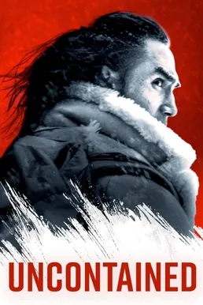

The genetics
The film's twist rests on a genetic trait. The outbreak itself is a virus that reduces people to a feral state, but the children's mother, a Homeland Security operative, reveals that part of the population has a genetic immunity that lets them move back and forth between the feral and the normal human state, a revelation tied to the secret the boy guards by locking his sister away at night. Genetics thus serves to reshape the zombie premise into something more ambiguous, blurring the line between human and monster, rather than as a science anyone practises; the source does not mention any research or engineering, or where the virus came from. Genetic resistance to infections exists in reality, but not in the form of reversible transformations.
How genetics is portrayed
- Overall portrayal of genetics
- neutral Genetics only explains why some of the infected can return to human form; no geneticist or genetic technology appears, so the story gives genetic science no evaluative colouring.
- Outcome of the genetic intervention
- not applicable No genetic work is done: the immunity that lets some infected switch between feral and human states is a natural trait that the mother reveals, and the virus's origin is not stated.
The story
In a snowbound forest under martial law after a viral outbreak that turns people feral, a silent drifter, Dan, is caught in a trap set by seven-year-old Jack and his two-year-old sister Brooke, who have turned an isolated cabin into a self-sufficient fortress. Jack confiscates Dan's weapons and will only return them once Dan has repaired and fortified the house, and a silent trust grows between them. A month earlier, a local couple had moved in under the pretext of caring for the apparently orphaned children, while Jack locked Brooke away at night to guard a secret. Feral infected roam the woods, and a ruthless militia commander, Brett Carson, searches the area for his missing daughter. The children's mother, a Homeland Security operative, returns and reveals that some people have a genetic immunity that lets them switch between the feral state and their normal selves, and that the family is linked to the missing girl. Dan defends the children against the militia and the infected.